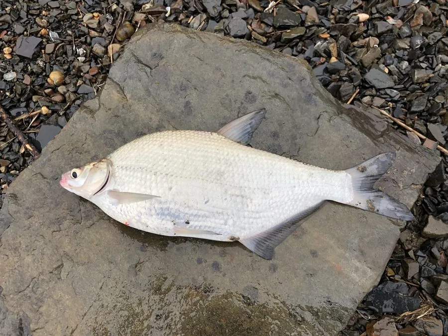

鱼类 · 动物界
鳊鱼 Parabramis pekinensis

中国南北水系常见的淡水鱼，体侧扁、呈菱形，以水生植物和藻类为食，肉质细嫩，是江河湖泊中常见的食用鱼。
- 分类
- 门脊索动物门纲硬骨鱼纲目鲤形目科鲤科属鳊属
- 栖息环境
- 江河、湖泊和水库的中下层，喜缓流和水草丰茂的水域
- 地理分布
- 中国长江、黄河、珠江、黑龙江等水系，以长江中下游湖泊最为常见
- 保护级别
- 暂无评估；中国未列入国家重点保护野生动物名录
物种志
鳊鱼体侧扁、呈菱形，头小，吻部尖，口端位，没有须。背部灰黑，体侧银灰，腹部浅白，各鳍灰黑色，鳞片中等大小。成鱼体长一般 20–35 cm，体重 0.3–1 kg，最大个体约 2.5 kg，在淡水鱼中属于中等体型。
鳊鱼栖息于江河、湖泊和水库的中下层，喜欢缓流和水草丰茂的水域。它是草食性鱼类，以水生高等植物、藻类和植物碎屑为主食，也吃少量浮游动物，因此肠管较长，适合消化植物性食物。繁殖期在 5–7 月，亲鱼在江河涨水时产卵，卵为漂流性，随水流孵化。鳊鱼分布于中国长江、黄河、珠江、黑龙江等水系，是常见的经济鱼类和养殖搭配品种，常与草鱼、鲢鱼等一起放养。它的外形与团头鲂相似，但体形更修长，背部隆起程度较低。目前它没有IUCN 的正式评估，中国未将其列入国家重点保护野生动物名录。
形态与习性
- 食性草食性，以水生植物、藻类和植物碎屑为主
- 体长一般 20–35 cm
- 体重常见 0.3–1 kg，最大约 2.5 kg
- 繁殖5–7 月在江河涨水时产卵，卵为漂流性
- 寿命约 8–10 年
- 习性多在水体中下层活动，常与草鱼、鲢鱼混合放养
趣味知识
- 鳊鱼体形侧扁如菱形，常被作为池塘养殖的搭配品种。
- 它以水草和藻类为主食，肠管较长，适合消化植物性食物。
- 鳊鱼与团头鲂外形相似，但鳊鱼体形更修长，背部隆起不明显。